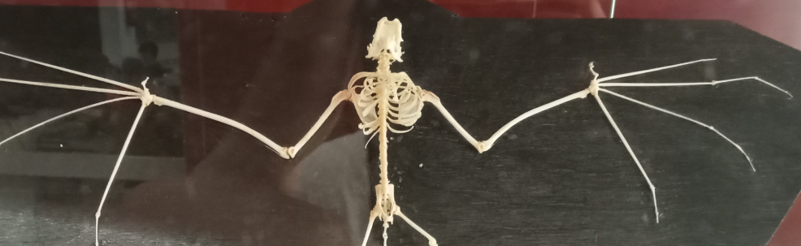
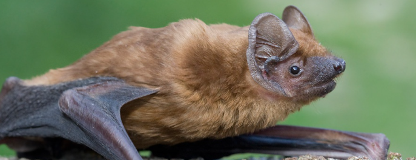
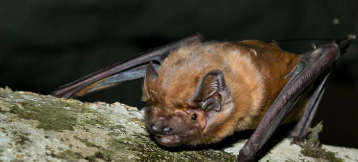
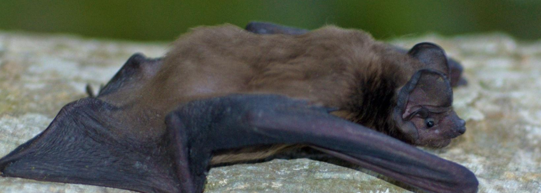

Nóctulo Grande




El nóctulo grande es una especie de quiróptero de la familia Vespertilionidae ampliamente distribuido por Asia, Europa y parte de África.
es una especie de quiróptero de la familia Vespertilionidae. Se trata del mayor murciélago europeo, con una envergadura de hasta 46 cm. No parece presentar dimorfismo sexual en cuanto al tamaño ni al pelaje (es decir, no hay diferencias entre machos y hembras en estos aspectos). Este último es monocolor, denso, largo y lustroso, y se extiende por el patagio. Su color varía del castaño al rojizo, con el vientre más claro o amarillento. Esta especie de murciélago se caracteriza por tener orejas cortas, anchas y redondeadas, un antitrago grueso y un trago grande, con forma arriñonada.
Aquí puedes añadir más información: tipos de vértebras, funciones o curiosidades.
← Volver